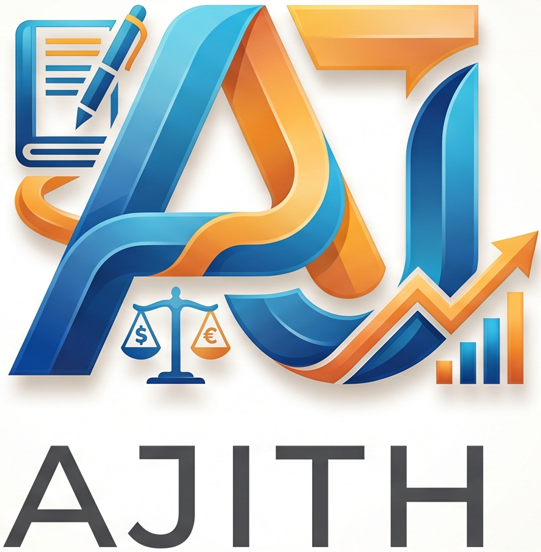

2A & 2B consolidation
Combine GST 2A and 2B exports into consistent workbooks for review.

AJITHAudit StudioA calmer way to complete audit work
Launch practical, browser-based tools for GST, bank data and documents. Each tool is designed to reduce repetitive work while keeping files on your device.
Choose a workspace to begin.
Combine GST 2A and 2B exports into consistent workbooks for review.
Convert GSTR-1 and GSTR-3B JSON data into audit-friendly Excel files.
Convert bank statements into a workable structured format.
Review and reconcile GST data with the existing reconciliation workspace.
Access the existing PDF unlocker for authorised documents.
PDF-to-Excel extraction with structured tax-data checks.
Match 2A/2B data to expense, stock and capital-goods tracking.
Merge, organise, split, compress-to-target-size and OCR PDFs.
This master page is a launchpad, not a fixed product. New modules can be added as separate pages without disturbing tools already in production.